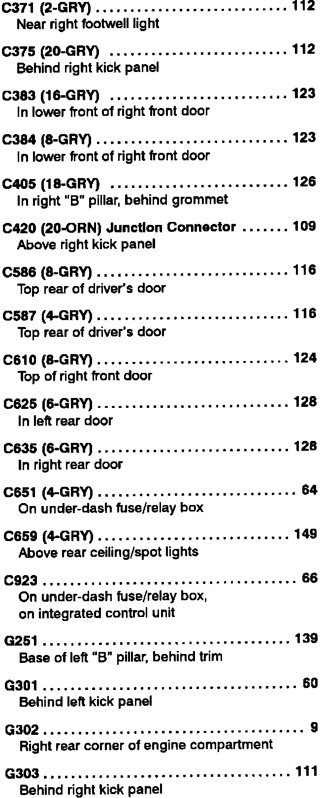

Operation CHARM
: Car repair manuals for everyone.
Home
>>
Acura
>>
1993
>>
Legend Sedan V6-3206cc 3.2L SOHC FI
>>
Repair and Diagnosis
>>
Instrument Panel, Gauges and Warning Indicators
>>
Low Fuel Lamp/Indicator
>>
Diagrams
>>
Diagram Information and Instructions
>>
Locations and Photographs
>>
Component Location Index
>>
Lighting Systems
>>
Entry Light Timer System
>>
C371 Thru G303
C371 Thru G303
Entry Lamp Timer, Component Location Index (C371 Thru G303):
